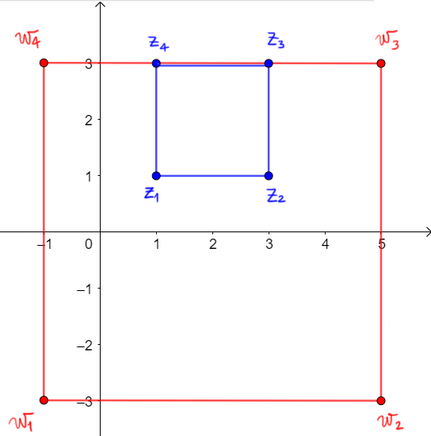
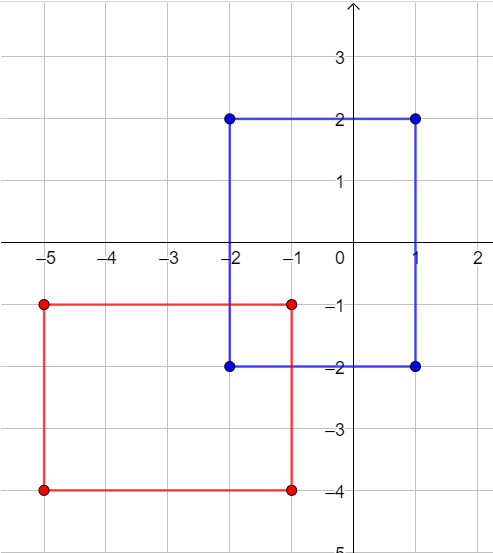

Esercizio 1

Il quadrato di vertici \(z_{1}\), \(z_{2}\), \(z_{3}\), \(z_{4}\), rappresentato in blu, viene trasformato dalla trasformazione \(T\) nel
quadrato rosso, avente vertici \(w_{1}\), \(w_{2}\), \(w_{3}\), \(w_{4}\).
-
Scrivere i numeri complessi \(z_{1}\), \(z_{2}\), \(z_{3}\), \(z_{4}\), \(w_{1}\), \(w_{2}\), \(w_{3}\), \(w_{4}\).
-
La trasformaizone \(T\) è una dilatazione di fattore \(k\) rispetto al punto \(a\).
Individuare a partire dalla figura
-
il fattore di dilatazione \(k\)
-
il numero complesso \(a\), rispetto al
quale è effettuata la dilatazione
-
Scrivere l'espressione dalla quale è definita la trasformazione \(T\).
Esercizio 2

Il rettangolo di vertici \(z_{1}\), \(z_{2}\), \(z_{3}\), \(z_{4}\), rappresentato in blu, viene trasformato dalla trasformazione \(T\) nel
rettangolo rosso, avente vertici \(w_{1}\), \(w_{2}\), \(w_{3}\), \(w_{4}\).
-
Scrivere i numeri complessi \(z_{1}\), \(z_{2}\), \(z_{3}\), \(z_{4}\), \(w_{1}\), \(w_{2}\), \(w_{3}\), \(w_{4}\).
-
La trasformaizone \(T\) è la composizione di una rotazione di un angolo \(\alpha\) rispetto all'origine e di una traslazione di un vettore \(b\).
Individuare a partire dalla figura
-
il numero complesso \(b\) associato alla traslazione
-
l'angolo \(\alpha\) associato alla rotazione
-
Scrivere l'espressione dalla quale è definita la trasformazione \(T\).